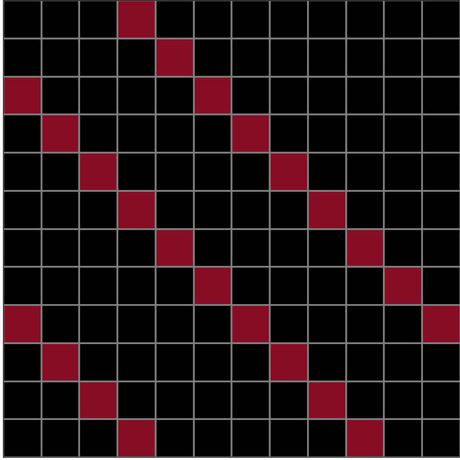
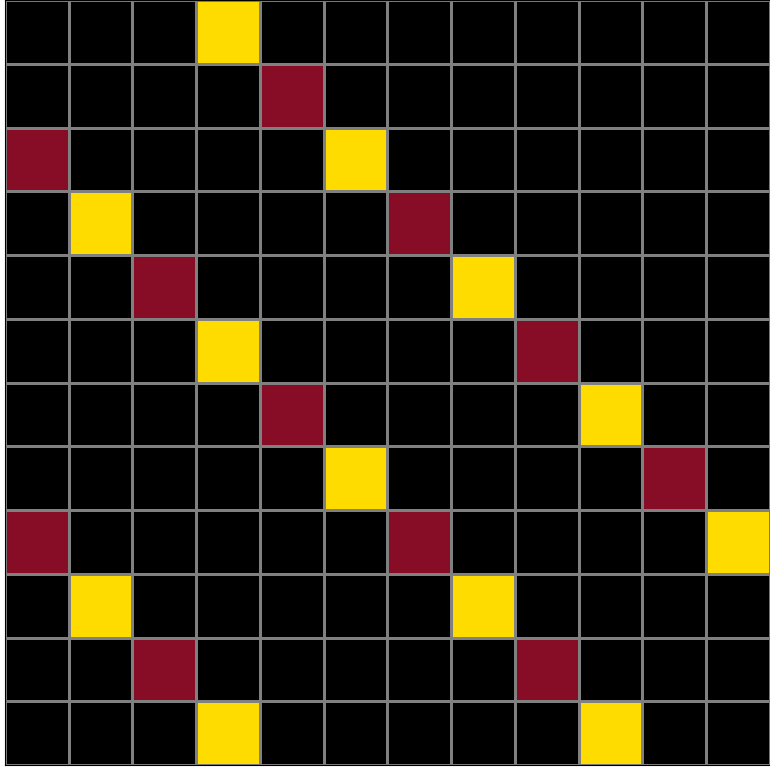
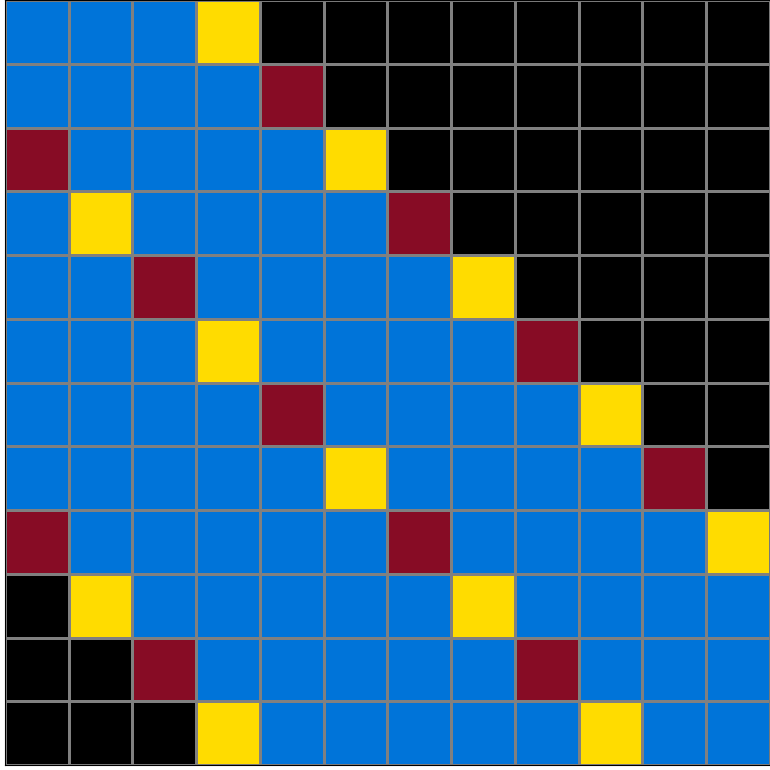
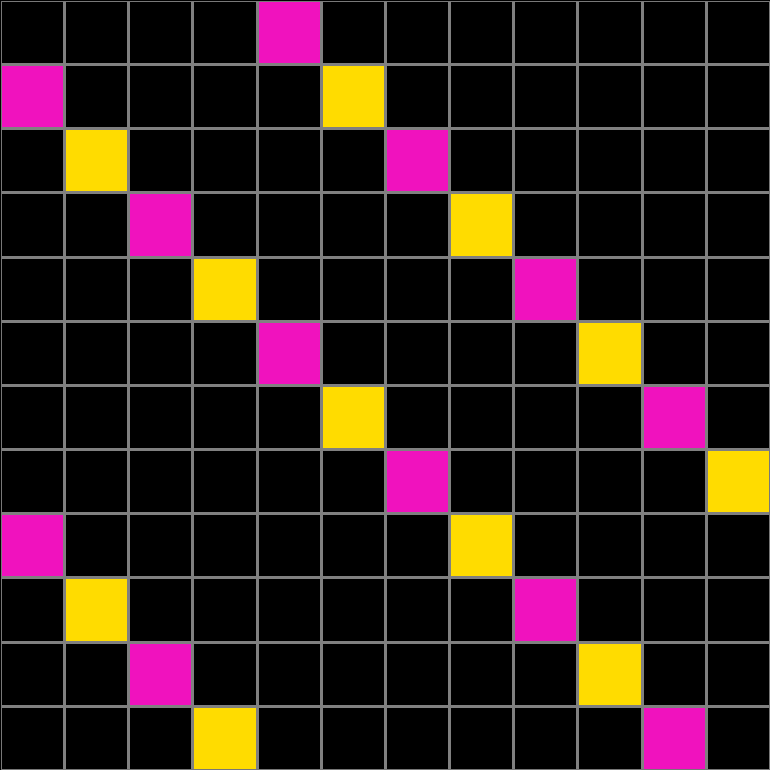
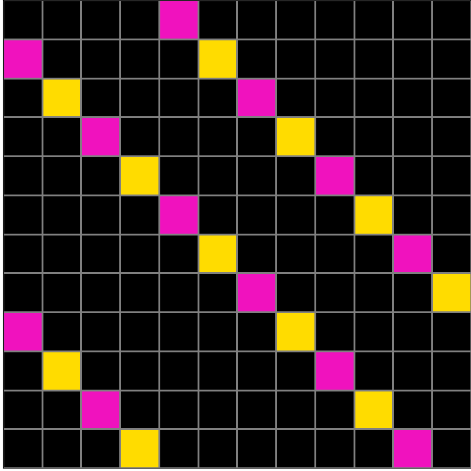
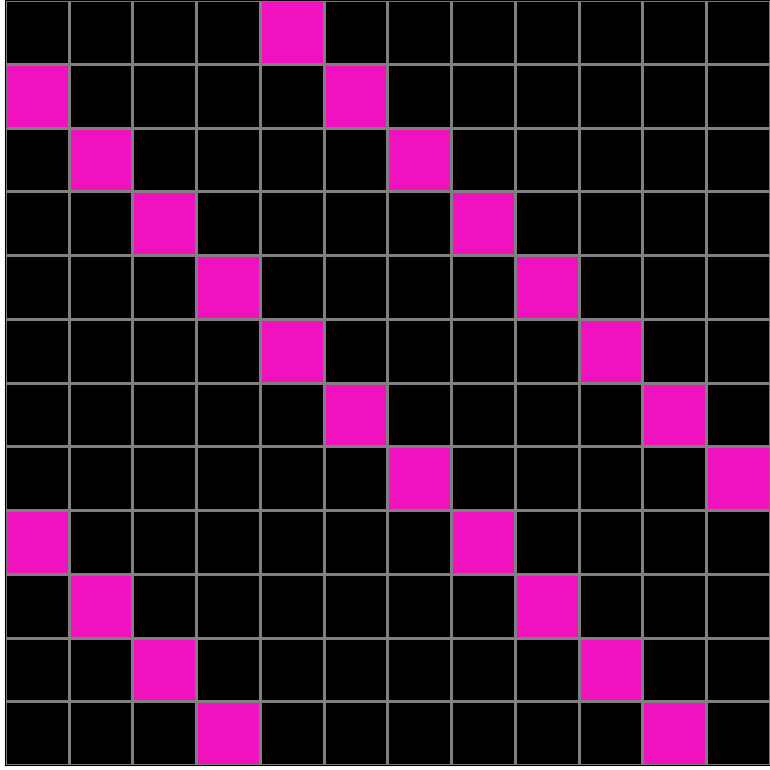
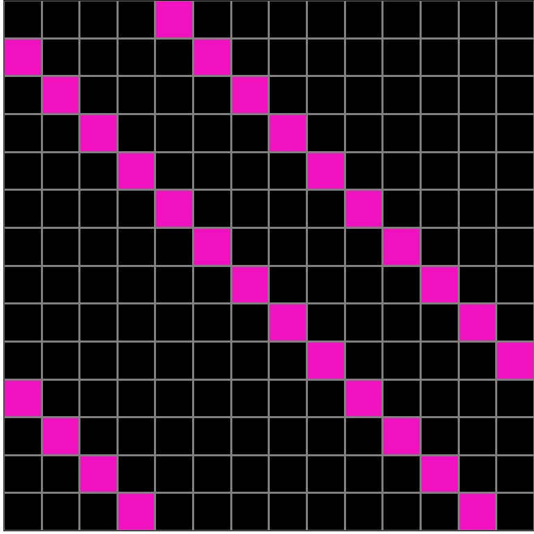

Participant 1
Initial description: Every 2nd square in the diagonal line should be replaced with a yellow square instead of the original color. The first square in each line should be the input color.
Final description: Every 2nd square in the diagonal line should be replaced with a yellow square instead of the original color. The first square in each line should be the input color.

Participant 2
Initial description: For diagonal lines, make every other square yellow.
Final description: For diagonal lines, make every other square yellow.

Participant 3
Initial description: Change every other colored square to yellow. Start from the top of the diagonals, but ensure that the first square in each diagonal stays the original color.
Final description: Change every other colored square to yellow. Start from the top of the diagonals, but ensure that the first square in each diagonal stays the original color.

Participant 4
Initial description: I might have got it wrong. But the rule is for diagonal lines that get closer together.
Final description: To have three diagonal lines of alternating burgandy and yellow blocks.



Participant 5
Initial description: you will recreate the diagonal lines but on the finished output you will alternate the color of the blocks so that you have original color, then yellow, then original then yellow and so on.
Final description: you will recreate the diagonal lines but on the finished output you will alternate the color of the blocks so that you have original color, then yellow, then original then yellow and so on.

Participant 6
Initial description: I copied the input, and then I started highlighting each diagonal line with yellow squares with every other square. I skipped the first square, and then I alternated until the end of each line.
Final description: I copied the input, and then I started highlighting each diagonal line with yellow squares with every other square. I skipped the first square, and then I alternated until the end of each line.

Participant 7
Initial description: very nice.
Final description: very nice.



Participant 8
Initial description: in the colored diagonal lines of squares alternate with yellow squares. color in every other colored square yellow
Final description: in the colored diagonal lines of squares alternate with yellow squares. color in every other colored square yellow

Participant 9
Initial description: Alternate yellow squares with the pink ones.
Final description: Alternate yellow squares with the pink ones.

Participant 10
Initial description: Identify all red squares in the grid. For each red square: a. Draw a horizontal red line from the left edge of the red square to the right edge of the grid, or until it encounters another red square. b. Draw a vertical red line from the top edge of the red square to the bottom edge of the grid, or until it encounters another red square. Identify all squares that are completely enclosed within the horizontal and vertical red lines drawn for any of the red squares.
Final description: Extend a horizontal red line from the left edge of the red square to the right edge of the grid, or until it encounters another red square. b. Extend a vertical red line from the top edge of the red square to the bottom edge of the grid, or until it encounters another red square. Identify all squares that are completely enclosed within the horizontal and vertical red lines drawn for any of the red squares.



Participant 11
Initial description: Inter-color change with yellow being the color that creates the desired pattern.
Final description: Inter-color change with yellow being the color that creates the desired pattern.

Participant 12
Initial description: I made a copy of the test input 12x12 grid and noticed from the examples that every other block was colored yellow from left to right in a diagonal line. The first block (from the left) was left the original color.
Final description: I made a copy of the test input 12x12 grid and noticed from the examples that every other block was colored yellow from left to right in a diagonal line. The first block (from the left) was left the original color.